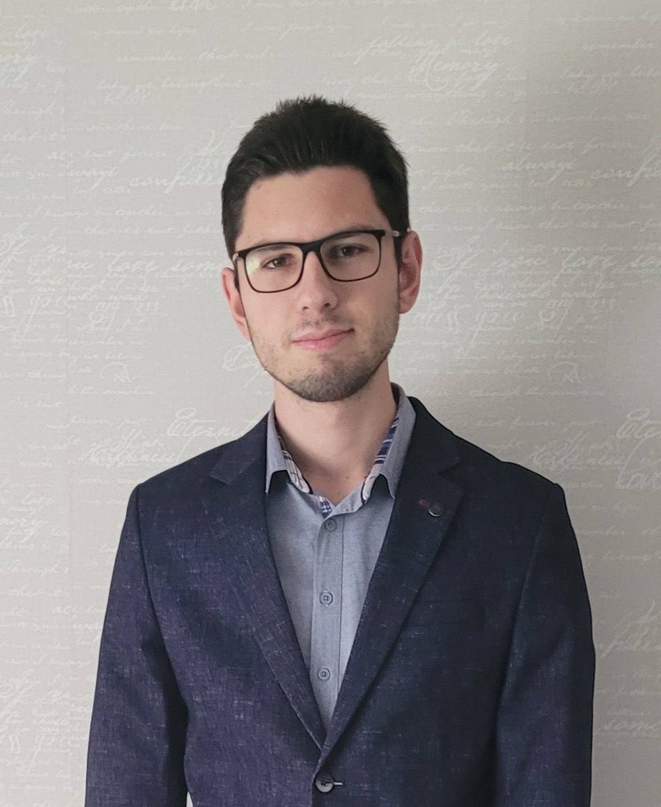

Marko Vasiljevic

Summary
I am a self-motivated and dedicated person. I love learning new things
everyday.
I am familiar with a few programming languages and hope to expand my knowledge.
I also like to read books, play games and watch movies. Currently a
student.
Education
-
Faculty of Tehnical Sciences, Cacak (Information Tehnology) 2020-
present.
Work expirience
Skills
- Basic knowledge of C,C++.
- Advanced Java knowledge.
- Data structures and algorithms.
- Hard working and dedicated.
- Self motivated
- Great communication skills
Other